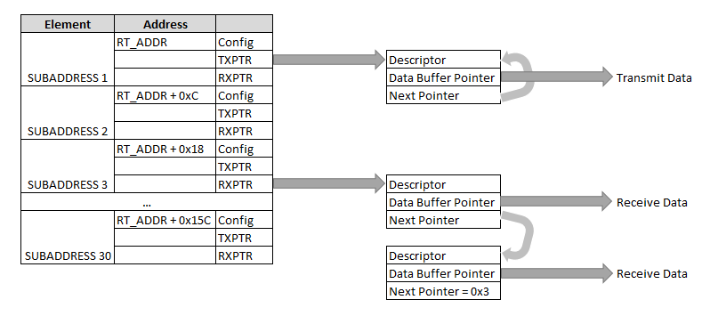

В данном режиме (CFG.MS=0) контроллер начинает работу с шиной после записи 1 в CFG.BE. Контроллер проверяет поступающие команды на предмет совпадения адреса с RT_CFG.RTA (или совпадение с широковещательным адресом при установленном RT_CFG.BE). Команды адресуемые контроллеру проверяются на предмет поддерживаемого значения субадреса и обрабатываются. В случае неподдерживаемого субадреса происходит сигнализация Message Error.
Замечание. Согласно [3 4.3.3.5.4] ОУ должно сбросить статусное слово после приема валидного CW за исключением 4.3.3.5.1.7. В 4.3.3.5.1.7 говорится об опциональных кодах, которые согласно стандарту трактуются как валидные (если не было протокольных ошибок), но нелегальные. Такое ограничение вносит неясность в процедуру детектирования ОУ приема невалидной команды, поэтому ehl_m1553 сбрасывает статусное слово при приеме всех валидных команд (легальных и нелегальных), за исключением TRANSMIT STATUS WORD и TRANSMIT LAST COMMAND.
Передатчик ОУ может быть отключен на основной или дублирующей шине. Если команда TRANSMITTER_SHUTDOWN поступила по шине A, то будет отключен передатчик на шине B. Если команда поступила по шине B, то будет отключен передатчик на шине A. При это повторная попытка отключить передатчик будет приводить к STATUS_WORD.MESSAGE_ERROR = 1. После получения команды отключения передатчика, ОУ перестает принимать команды по отключенной шине. Это позволяет избежать отключения активной шины.
Обработка команд приема/передачи данных в контроллере (в режиме ОУ) происходит в соответствии со значениями дескрипторов, расположенных в памяти по адресу, задаваемому в RT_ADDR. Дескрипторы содержат настройки устройства для заданного субадреса (Config), состояние (Descriptor), а также указатели на буферы чтения и записи. Перед началом работы с ОУ необходимо проинициализировать таблицу дескрипторов.
Data Buffer Pointer должен быть выровнен до границы 2 байта, т.е. младший разряд адреса должен быть равен 0.
Config [0x0]: Настройка дескриптора субадреса
В случае получения команды, адресуемой субадресу с отключенной поддержкой данного типа транзакции (RXEN или TXEN) или неподдерживаемым размером транзакции (RXSZ иди TXSZ) в STATUS слове будет установлен бит MESSAGE_ERROR, содержимое передаваемых данных следует считать невалидным.
| Биты | Название | Описание |
|---|---|---|
| 31:18 | - | Резерв |
| 17 | IGNDV | Ignore Data Valid. Игнорировать флаг Data Valid дескриптора буфера при записи в него. |
| 16 | BCRXEN | Broadcast Receive Enable. Разрешение приема широковещательных команд для выбранного субадреса. |
| 15 | RXEN | Receive Enable. Разрешение обработки команд приема для выбранного субадреса. |
| 14 | - | Резерв |
| 13 | RXIRQ | Receive IRQ. Разрешение прерывания по окончании приема: |
| 12:8 | RXSZ | Receive Size. Максимальный поддерживаемый размер приема (в 16-битных словах) для выбранного субадреса. Значение 0 соответствует 32 словам. |
| 7 | TXEN | Transmit Enable. Разрешение обработки команд передачи для выбранного субадреса. |
| 6 | - | Резерв |
| 5 | TXIRQ | Transmit IRQ. Разрешение прерывания по окончании передачи: |
| 4:0 | TXSZ | Transmit Size. Максимальный поддерживаемый размер передачи (в 16-битных словах) для выбранного субадреса. Значение 0 соответсвует 32 словам. |
Descriptor: Дескриптор буфера. Заполняется по окончании выполнения команды на шине.
| Биты | Название | Описание |
|---|---|---|
| 31 | DV | Data Valid. Записывается 1 при заполнении буфера контроллером. Должен быть записан 0 программно перед использованием буфера. Запись в заполненный буфер не производится, если только не сброшен CONFIG.IGNDV. |
| 30:10 | - | Резерв. |
| 9 | BC | Broadcast. Записывается, в случае широковщательного трансфера. |
| 8 | BUS | Шина, по которой пришло сообщение: 0 - bus A; 1 - bus B. |
| 7:3 | SZ | Size. Количество 16-битных слов в команде (0 соответствует 32 словам). Значение поля не валидно в случае Supersed. |
| 2:0 | TRES | Transfer Result. Результат выполнения команды:
|
Согласно [6 30.7] ОУ должно реализовать механизм Data Wrap-around. ehl_m1553 не имеет специального оборудования для поддержки указанного функционала. Тем не менее он может быть реализован программно. Для этого следует настроить субадрес 30 с одним и тем же адресом буфера для приема и передачи сообщений. Сам буфер при этом должен работать в циклическом режиме. Такая настройка позволяет читать из ОУ те же данные, которые только что были в него записаны.